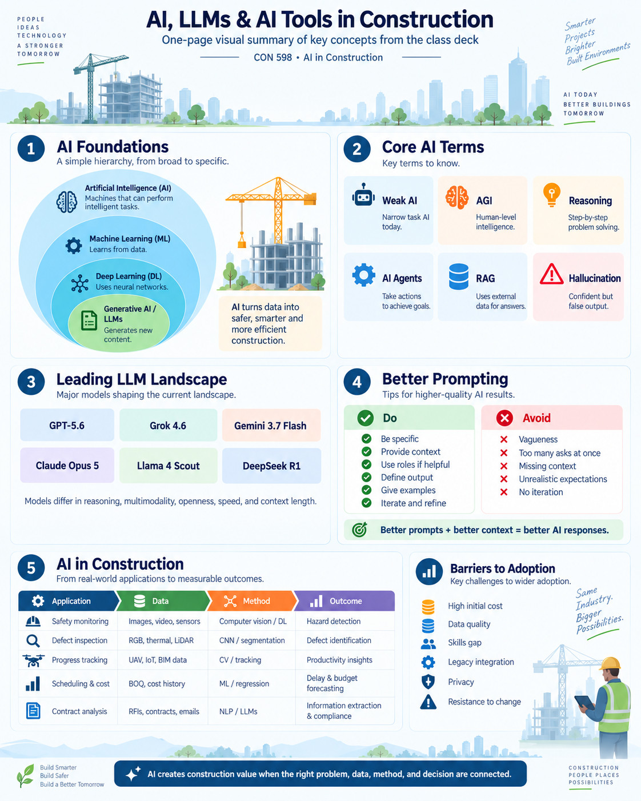

AI in Construction
Visual notes from CON 598 at Arizona State University. Each one condenses a topic to a single page — the terms, the tools, and where they actually fit on a project. I add to this as the semester goes.
AI, LLMs, and AI tools in construction
Where the vocabulary comes from and what it maps to on a jobsite. The hierarchy running from AI down to generative models, the terms worth knowing, what separates a useful prompt from a vague one, and five construction applications traced from data through method to outcome.
